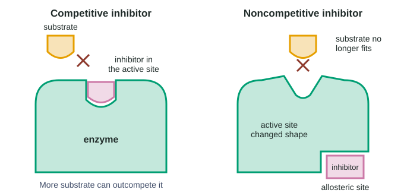

An enzyme's shape decides what it binds (topic 3.1), and its active site lowers the activation energy of one reaction (topic 3.2). This page is about everything around the enzyme that changes how fast it works: temperature, pH, how much substrate and enzyme there are, helper ions, and other molecules that bind to it. These are the most tested ideas in the enzyme topics, and almost every question comes with a graph.
Temperature: faster, then broken
Molecules are always moving. Warming a reaction makes enzyme and substrate molecules move faster, so they meet more often, and more of those collisions carry enough energy to react. Up to a point, warmer means faster.
Past that point, the extra motion starts breaking the hydrogen bonds and other weak interactions that hold the enzyme's fold. The active site loses its shape: the enzyme denatures, and the rate falls steeply. The temperature where the rate peaks is the optimal temperature. For most human enzymes it is near body temperature, 37 °C. Enzymes from bacteria in hot springs can have optima above 70 °C, because their folds are held by more and stronger interactions.

Look at the shape of curve A in Figure 1: a slow rise and a steep fall. The two sides have different causes. On the cold side the enzyme is intact but slow; on the hot side it is being damaged.
That difference shows up in experiments. Cool an enzyme and warm it back up, and its rate comes back. Heat it past its optimum and cool it again, and it may not. Some proteins refold when conditions return to normal (renaturation), especially after mild heating; strong or long heating usually leaves them permanently denatured.
Worked example: slowed or damaged? Samples of an enzyme are held at different temperatures, then all are cooled to 37 °C and tested again.
The 25 °C sample made product at 18 µmol/min while cold and 41 µmol/min after warming to 37 °C, the same as the sample kept at 37 °C (40). Conclusion: the cold enzyme was intact, just slow.
The 60 °C sample made 6 µmol/min while hot and 14 µmol/min back at 37 °C. 14 ÷ 40 × 100 = 35% recovered. Conclusion: some molecules refolded, most were permanently denatured.
pH: charges on the side chains
pH measures hydrogen ion concentration. Many side chains can gain or lose a hydrogen ion: a –COO⁻ group becomes –COOH (losing its negative charge) when hydrogen ions are plentiful, and an –NH₂ group becomes –NH₃⁺ (gaining a positive charge). Change the pH and you change the charges in the active site and the ionic attractions that hold the fold.
Each enzyme works best at its optimal pH, which usually matches where it works (Figure 1B). Pepsin works in the stomach at about pH 2; trypsin works in the small intestine at about pH 8. Remember that each pH unit is a tenfold change: pH 2 has 10⁶, a million times, more hydrogen ions than pH 8. Far from its optimum, an enzyme denatures.
Substrate and enzyme concentration
Start with a fixed amount of enzyme and add more and more substrate (Figure 1C, the top curve). At first the rate rises almost in step with substrate: most active sites are empty, so each extra substrate molecule finds one. As more substrate is added, more of the active sites are busy at any moment, and the curve bends. Eventually nearly every active site is occupied all the time. This is saturation, and the rate levels off at a maximum rate (often written Vmax).
A limiting factor is whatever is in short supply. On the rising part of the curve, substrate is limiting: add substrate and the rate goes up. On the plateau, the number of active sites is limiting: add substrate and nothing happens, add enzyme and the rate goes up. With substrate in excess, the rate is proportional to enzyme concentration: double the enzyme, double the rate.
Cofactors: helpers the enzyme needs
Many enzymes cannot work with their protein alone. They need a cofactor, a non-protein helper, usually bound in the active site. Inorganic cofactors are metal ions: carbonic anhydrase needs zinc, many enzymes that handle phosphate groups need magnesium. Organic cofactors are called coenzymes, and many are made from vitamins, which is one reason vitamins are needed in the diet. Remove a cofactor, for example with a chemical that grabs metal ions, and the enzyme stops; add the cofactor back and it works again.
Inhibitors
An inhibitor is a molecule that binds an enzyme and lowers its rate. Cells use inhibitors to control enzymes, and many drugs and poisons are inhibitors. The exam expects you to tell two kinds apart from data (Figure 2).

A competitive inhibitor looks like the substrate and binds the active site. While it is there, substrate cannot bind. But the two compete: whichever is more plentiful wins more of the active sites. Flood the reaction with substrate and the inhibitor rarely gets a turn, so the rate climbs back toward the normal maximum. It just takes more substrate to get there.
A noncompetitive inhibitor binds somewhere else on the enzyme, an allosteric site, and changes the enzyme's shape so the active site works poorly. Substrate does not compete with it, because they bind different places. Adding substrate cannot help, so the maximum rate is lower.
| Competitive | Noncompetitive | |
|---|---|---|
| Where it binds | Active site | Allosteric site (elsewhere) |
| Shape | Resembles the substrate | Need not resemble the substrate |
| Effect of adding lots of substrate | Overcomes it | Does not overcome it |
| Maximum rate | Unchanged (reached at higher substrate) | Lowered |
| Rate-against-substrate curve | Rises more slowly, approaches the normal plateau | Levels off at a lower plateau |
Allosteric sites are not only for inhibitors. In allosteric regulation, a molecule binding an allosteric site can also speed the enzyme up by holding it in its active shape. Topic 3.4 shows how cells use this to control whole chains of reactions.
Most inhibitors bind weakly and let go again: they are reversible. An irreversible inhibitor binds for good, usually by a covalent bond. The enzyme molecule never works again, and activity comes back only when the cell makes new enzyme. Nerve-gas poisons and some insecticides irreversibly block an enzyme nerves need; the antibiotic penicillin irreversibly blocks an enzyme bacteria use to build their cell walls.
Worked example: which inhibitor is which? An enzyme's rate is measured at rising substrate concentrations with no inhibitor, inhibitor X or inhibitor Y.
At 32 mM substrate: no inhibitor 47.1, X 42.1, Y 23.5 µmol/min. X reaches 42.1 ÷ 47.1 × 100 ≈ 89% of normal and is still climbing; Y is at about 50% and flat.
Reasoning: extra substrate is overcoming X, so X competes for the active site: competitive. Extra substrate does nothing for Y, so Y must act somewhere else: noncompetitive.
Trap: at low substrate (2 mM) both give 12.5 µmol/min. A single point cannot tell them apart; look at the high-substrate end of the graph.
How the exam tests this
- Explain the rise and fall of a temperature or pH curve with a mechanism: collisions on one side, denaturation or changed charges on the other.
- Identify the limiting factor on each part of a rate-against-substrate curve, and predict what adding substrate or enzyme does.
- Classify an inhibitor from a graph or table, and predict whether extra substrate restores the rate.
- Design or evaluate an experiment: independent and dependent variables, what to hold constant, which comparison tube is needed.